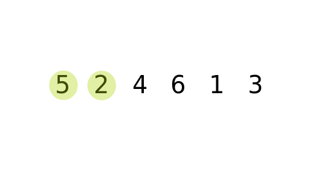
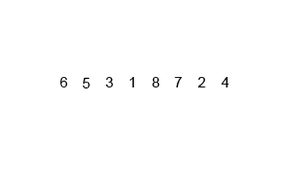
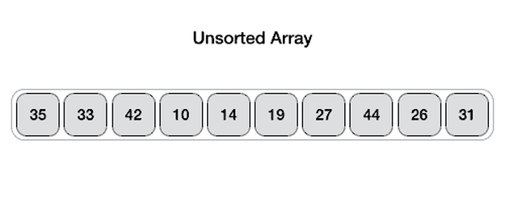
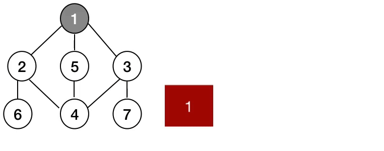

This is an in-place comparison-based sorting algorithm. Here, a sub-list is maintained which is always sorted. For example, the lower part of an array is maintained to be sorted. An element which is to be 'insert'ed in this sorted sub-list, has to find its appropriate place and then it has to be inserted there. Hence the name, insertion sort.
The array is searched sequentially and unsorted items are moved and inserted into the sorted sub-list (in the same array). This algorithm is not suitable for large data sets as its average and worst case complexity are of Ο(n2), where n is the number of items.
Algorithm
Step 1 − If it is the first element, it is already sorted. return 1;
Step 2 − Pick next element
Step 3 − Compare with all elements in the sorted sub-list
Step 4 − Shift all the elements in the sorted sub-list that is greater than the value to be sorted
Step 5 − Insert the value
Step 6 − Repeat until list is sorted
Pseudocode
procedure insertionSort( A : array of items )int holePosition
int valueToInsert
for i =1 to length(A) inclusive do:/* select value to be inserted */
valueToInsert = A[i]
holePosition = i
/*locate hole position for the element to be inserted */while holePosition >0and A[holePosition-1]> valueToInsert do:
A[holePosition]= A[holePosition-1]
holePosition = holePosition -1endwhile/* insert the number at hole position */
A[holePosition]= valueToInsert
endforend procedure
2.Selection Sort
Selection sort is a simple sorting algorithm. This sorting algorithm is an in-place comparison-based algorithm in which the list is divided into two parts, the sorted part at the left end and the unsorted part at the right end. Initially, the sorted part is empty and the unsorted part is the entire list.
The smallest element is selected from the unsorted array and swapped with the leftmost element, and that element becomes a part of the sorted array. This process continues moving unsorted array boundary by one element to the right.
This algorithm is not suitable for large data sets as its average and worst case complexities are of Ο(n2), where n is the number of items.
Algorithm
Step 1 − Set MIN to location 0
Step 2 − Search the minimum element in the list
Step 3 − Swap with value at location MIN
Step 4 − Increment MIN to point to next element
Step 5 − Repeat until list is sorted
Pseudocode
procedure selection sort
list : array of items
n : size of list
for i =1 to n -1/* set current element as minimum*/
min = i
/* check the element to be minimum */for j = i+1 to n
if list[j]< list[min]then
min = j;endifendfor/* swap the minimum element with the current element*/if indexMin != i then
swap list[min]and list[i]endifendforend procedure
3.Bubble Sort
Bubble sort is a simple sorting algorithm. This sorting algorithm is comparison-based algorithm in which each pair of adjacent elements is compared and the elements are swapped if they are not in order. This algorithm is not suitable for large data sets as its average and worst case complexity are of Ο(n2) where n is the number of items..

Algorithm
Step 1 −Starting with the first element(index = 0), compare the current element with the next element of the array.
Step 2 − If the current element is greater than the next element of the array, swap them.
Step 3 − If the current element is less than the next element, move to the next element. Repeat Step 1.
Pseudocode
procedure bubbleSort( list : array of items )
loop = list.count;for i =0 to loop-1do:
swapped =falsefor j =0 to loop-1do:/* compare the adjacent elements */if list[j]> list[j+1]then/* swap them */
swap( list[j], list[j+1])
swapped =trueendifendfor/*if no number was swapped that means
array is sorted now, break the loop.*/if(not swapped)thenbreakendifendforend procedure return list
4.MergeSort
Merge Sort is a Divide and Conquer algorithm. It divides the input array into two halves, calls itself for the two halves, and then merges the two sorted halves. The merge() function is used for merging two halves. The merge(arr, l, m, r) is a key process that assumes that arr[l..m] and arr[m+1..r] are sorted and merges the two sorted sub-arrays into one. See the following C implementation for details.

Algorithm
Step 1 − If it is only one element in the list it is already sorted, return.
Step 2 − Divide the list recursively into two halves until it can no more be divided.
Step 3 − Merge the smaller lists into new list in sorted order.
Step 4 − Increment MIN to point to next element
Step 5 − Repeat until list is sorted
Pseudocode
procedure mergesort(var a as array )if( n ==1)return a
var l1 as array = a[0]... a[n/2]var l2 as array = a[n/2+1]... a[n]
l1 = mergesort( l1 )
l2 = mergesort( l2 )return merge( l1, l2 )end procedure
procedure merge(var a as array,var b as array )var c as array
while( a and b have elements )if( a[0]> b[0])add b[0] to the endof c
remove b[0]from b
elseadd a[0] to the endof c
remove a[0]from a
endifendwhilewhile( a has elements )add a[0] to the endof c
remove a[0]from a
endwhilewhile( b has elements )add b[0] to the endof c
remove b[0]from b
endwhilereturn c
end procedure
5.Quick Sort
Quick sort is a highly efficient sorting algorithm and is based on partitioning of array of data into smaller arrays. A large array is partitioned into two arrays one of which holds values smaller than the specified value, say pivot, based on which the partition is made and another array holds values greater than the pivot value.
Quicksort partitions an array and then calls itself recursively twice to sort the two resulting subarrays. This algorithm is quite efficient for large-sized data sets as its average and worst-case complexity are O(n2), respectively.

Algorithm
Step 1 − Make the right-most index value pivot
Step 2 − partition the array using pivot value
Step 3 − quicksort left partition recursively
Step 4 − quicksort right partition recursively
Shell sort is a highly efficient sorting algorithm and is based on insertion sort algorithm. This algorithm avoids large shifts as in case of insertion sort, if the smaller value is to the far right and has to be moved to the far left.
This algorithm uses insertion sort on a widely spread elements, first to sort them and then sorts the less widely spaced elements. This spacing is termed as interval.
This algorithm is quite efficient for medium-sized data sets as its average and worst-case complexity of this algorithm depends on the gap sequence the best known is Ο(n), where n is the number of items. And the worst case space complexity is O(n).
Algorithm
Step 1 −Initialize the value of h
Step 2 − Divide the list into smaller sub-list of equal interval h
Step 3 − Sort these sub-lists using insertion sort
Step 4 − Repeat until complete list is sorted
Pseudocode
procedure shellSort()
A : array of items
/* calculate interval*/while interval < A.length /3do:
interval = interval *3+1endwhilewhile interval >0do:for outer = interval; outer < A.length; outer ++do:/* select value to be inserted */
valueToInsert = A[outer]
inner = outer;/shift element towards right/while inner > interval -1&& A[inner - interval]>= valueToInsert do:
A[inner]= A[inner - interval]
inner = inner - interval
endwhile/* insert the number at hole position */
A[inner]= valueToInsert
endfor/* calculate interval*/
interval =(interval -1)/3;endwhileend procedure
7.Heap Sort
Heap sort processes the elements by creating the min heap or max heap using the elements of the given array. Min heap or max heap represents the ordering of the array in which root element represents the minimum or maximum element of the array. At each step, the root element of the heap gets deleted and stored into the sorted array and the heap will again be heapified.
The heap sort basically recursively performs two main operations.
1.Build a heap H, using the elements of ARR.
2.Repeatedly delete the root element of the heap formed in phase 1..
Algorithm
Step 1 - Construct a Binary Tree with given list of Elements.
Step 2 - Transform the Binary Tree into Min Heap.
Step 3 - Delete the root element from Min Heap using Heapify method.
Step 4 - Put the deleted element into the Sorted list.
Step 5 - Repeat the same until Min Heap becomes empty.
Step 6 - Display the sorted list.
Pseudocode
Heapsort(A) {
BuildHeap(A)
for i <- length(A) downto 2 {
exchange A[1] <-> A[i]
heapsize <- heapsize -1
Heapify(A, 1)
}
BuildHeap(A) {
heapsize <- length(A)
for i <- floor( length/2 ) downto 1
Heapify(A, i)
}
Heapify(A, i) {
le <- left(i)
ri <- right(i)
if (le<=heapsize) and (A[le]>A[i])
largest <- le
else
largest <- i
if (ri<=heapsize) and (A[ri]>A[largest])
largest <- ri
if (largest != i) {
exchange A[i] <-> A[largest]
Heapify(A, largest)
}
}
Graph Traversal Algorithm
1.Breadth First Search
Breadth first search is a graph traversal algorithm that starts traversing the graph from root node and explores all the neighbouring nodes. Then, it selects the nearest node and explore all the unexplored nodes. The algorithm follows the same process for each of the nearest node until it finds the goal.
The algorithm of breadth first search is given below. The algorithm starts with examining the node A and all of its neighbours. In the next step, the neighbours of the nearest node of A are explored and process continues in the further steps. The algorithm explores all neighbours of all the nodes and ensures that each node is visited exactly once and no node is visited twice.

Algorithm
Step 1: SET STATUS = 1 (ready state)
for each node in G
Step 2: Enqueue the starting node A
and set its STATUS = 2
(waiting state)
Step 3: Repeat Steps 4 and 5 until
QUEUE is empty
Step 4: Dequeue a node N. Process it
and set its STATUS = 3
(processed state).
Step 5: Enqueue all the neighbours of
N that are in the ready state
(whose STATUS = 1) and set
their STATUS = 2
(waiting state)
[END OF LOOP]
Step 6: EXIT
Pseudocode
Set all nodes to "not visited";
q = new Queue();
q.enqueue(initial node);
while ( q ≠ empty ) do
{
x = q.dequeue();
if ( red">x has not been visited )
{
visited[x] = true; // Visit node x !
for (every edge (x, y) /* we are using all edges ! */ )
if ( y has not been visited )
q.enqueue(y); // Use the edge (x,y) !!!
}
2.Depth First Search
Depth first search (DFS) algorithm starts with the initial node of the graph G, and then goes to deeper and deeper until we find the goal node or the node which has no children. The algorithm, then backtracks from the dead end towards the most recent node that is yet to be completely unexplored.
The data structure which is being used in DFS is stack. The process is similar to BFS algorithm. In DFS, the edges that leads to an unvisited node are called discovery edges while the edges that leads to an already visited node are called block edges
Algorithm
Step 1: SET STATUS = 1 (ready state) for each node in G
Step 2: Push the starting node A on the stack and set its STATUS = 2 (waiting state)
Step 3: Repeat Steps 4 and 5 until STACK is empty
Step 4: Pop the top node N. Process it and set its STATUS = 3 (processed state)
Step 5: Push on the stack all the neighbours of N that are in the ready state (whose STATUS = 1) and set their
STATUS = 2 (waiting state)
[END OF LOOP]
Step 6: EXIT
Pseudocode
Set all nodes to "not visited";
s = new Stack(); ******* Change to use a stack
s.push(initial node); ***** Push() stores a value in a stack
while ( s ≠ empty ) do
{
x = s.pop(); ****** Pop() remove a value from the stack
if ( x has not been visited)
{
visited[x] = true; // Visit node x !
for ( every edge (x, y) /* we are using all edges ! */ )
if ( y has not been visited)
s.push(y); ***** Use push() !
}
}
Binary Search Tree
Binary Search tree can be defined as a class of binary trees, in which the nodes are arranged in a specific order. This is also called ordered binary tree.
In a binary search tree, the value of all the nodes in the left sub-tree is less than the value of the root.
Similarly, value of all the nodes in the right sub-tree is greater than or equal to the value of the root.
This rule will be recursively applied to all the left and right sub-trees of the root.
Dijkstra’s shortest path algorithm
Dijkstra’s algorithm is also known as the shortest path algorithm. It is an algorithm used to find the shortest path between nodes of the graph. The algorithm creates the tree of the shortest paths from the starting source vertex from all other points in the graph. It differs from the minimum spanning tree as the shortest distance between two vertices may not be included in all the vertices of the graph. The algorithm works by building a set of nodes that have a minimum distance from the source. Here, Dijkstra's algorithm uses a greedy approach to solve the problem and find the best solution.
Algorithm
1.First of all, we will mark all vertex as unvisited vertex
2.Then, we will mark the source vertex as 0 and all other vertices as infinity
3.Consider source vertex as current vertex
4.Calculate the path length of all the neighboring vertex from the current vertex by adding the weight of the edge in the current vertex
5.Now, if the new path length is smaller than the previous path length then replace it otherwise ignore it
6.Mark the current vertex as visited after visiting the neighbor vertex of the current vertex
7.Select the vertex with the smallest path length as the new current vertex and go back to step 4.
8.Repeat this process until all the vertex are marked as visited.
Once we go through the algorithm, we can backtrack the source vertex and find our shortest path.
Pseudocode
function dijkstra(G, S)
each vertex V in G
distance[V] <- infinite
previous[V] <- NULL
IfV != S, add V to Priority Queue Q
distance[S]<- 0
while Q IS NOT EMPTY
U<- Extract MIN from Q
for each unvisited neighbour V of U
tempDistance<- distance[U] + edge_weight(U, V)
if tempDistance < distance[V]
distance[V]< tempDistance
previous[V]<- U
return distance[], previous[]